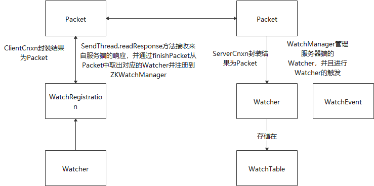

分布式架构
集中式与分布式
集中式无法调和的问题是单机故障，扩容难的问题
分布式系统是一个硬件或软件组件分布在不同的网络计算机上，彼此之间仅仅通过消息传递进行通信和协调的系统。有以下特点：
- 分布性
- 对等性：计算机没有主备之分，组成分布式系统的所有计算机节点都是对等的。有数据副本和服务副本两种方式。
- 并发性：对于资源有并发访问的需求
- 缺乏全局时钟：无法区分事务谁先谁后
- 故障总是会发生
分布式典型问题：
- 通信异常已经发生
- 网络分区：由于节点或者网路终端导致集群分为网络分区
- 三态：对于一个请求，有成功，失败和超时。我们需要将不可知的状态（如超时）进行处理，让请求只有两种状态
- 节点故障
分布式事务
概念：事务的参与者，支持事务的服务器，资源服务器以及事务管理器分别位于分布式系统的不同节点之上。
CAP理论：一个分布式系统不可能同时满足一致性，可用性，分区容错性。
- 一致性：也就是强一致性。数据在多个副本之间是否能够保持一致的特性。
- 可用性：对于客户的请求，要保证在合理的响应时间返回结果。
- 分区容错性：分布式系统在遇到任何网络分区故障的时候，仍然需要能够保证对外提供满足一致性和可用性的服务，除非是整个网络环境都发生故障。
对于可用性，是压倒性的，是必须满足的。分区容错性是建立在分区网络故障的基础上，也就是网络分区是一定存在的，所以，可用性和分区容错性是必须满足的。所以只能够牺牲一致性。
BASE理论：即使无法做到强一致性，但每个应用都可用根据自身的业务特点，采用适当的方式来使得系统达到最终一致性。
- 基本可用（在分布式系统出现不可预知故障的时候，允许损失部分可用性，比如延长响应时间，或者功能上的损失）
- 软状态：允许系统在不同节点的数据副本之间进行数据同步的过程存在延时。
- 最终一致性：需要最终数据能够达到一致，也就是要求其他事务能够读取中间数据状态的结果而不报错，保证最终结果一致性就可以。
一致性协议
2PC与3PC算法
2PC算法
2PC算法分为两个阶段：第一个阶段提交事务请求，第二个阶段是执行事务提交。第一阶段是比较耗时的，第二个阶段基本上可以在瞬间执行。
优点：原理简单，实现方便
缺点：
- 同步阻塞（在二阶段提交执行过程中，所有参与该事务操作的逻辑都处于阻塞状态，也就是各个参与者在等待其他参与者响应的过程中，将无法进行其他任何操作
- 单点问题：在锁定事务资源之后，假设协调者出现宕机等问题时，其他事务将会一直处于锁定事务资源的状态中，而无法继续完成事务操作。
- 数据不一致：在二阶段时，当发起事务提交的过程中，可能出现有些参与者收不到消息，导致出现数据不一致的情况
- 太过保守（一般情况下，如果所有的机器都要成功的话，策略会显得比较保守，一般最好的情况是半数以上的都能够成功，然后剩下的通过数据同步的方式来继续同步就行啦）
3PC算法
该算法实际上并没有改变2PC算法的本质的， 只是在2PC的基础上，加上一个预先检测而已，让协调者能够在最开始的时候就能够确定是否有机器出现宕机。相比二阶段提交协议，最大优点就是降低了参与者的阻塞范围，并且能够在出现单点故障后继续达到一致。
Paxos算法
该算法解决的问题是如何在一个可能发生宕机或者网络异常的分布式系统中，快速且正确地在集群内部对某个数据的值达成一致，并且保证不论发生以上任何异常，都不会破坏整个系统的一致性。
该算法最大的思想就是通过少数服从多数的方式，保证有容错性。
该算法太复杂，一般在实际上很少使用。一般都是作为内部算法，不需要我们来感知存在。
Zookeeper与Paxos
初识ZooKeeper
Zookeeper为分布式应用提供了高效且可靠的分布式协调服务，提供了诸如统一命名服务，配置管理和分布式锁等分布式的基础服务。
ZooKeeper设计目标：
- 简单的数据模型（ZooKeeper使得分布式程序能够通过一个共享的，树型结果的名字空间来相互协调，Zookeeper将全量数据存储到内存中，一次来实现提高服务器吞吐，减少延迟的目的。
- 可以构建集群，只要集群中存在超过一半的机器能够正常工作，那么集群就能够对外服务。都是以一主多备的方式来运行。
- 顺序访问：对于来自客户端的每个更新请求，ZooKeeper都会分配一个全局唯一的递增编号，返回所有事务操作的先后顺序。（但是一般因为分布式操作的不确定，一般情况下，很难保证谁先谁后）
- 高性能：所有的ZNode都是在内存中，运行比较快。（一般情况下）
ZooKeeper基本概念
集群角色：Leader服务器为客户端提供读和写服务，Follower和Observer都能够提供读服务，唯一的区别就是Observer不参与Leader选举过程，也不参与写操作的过半写成功的策略，因此Observer可以在不影响写性能的情况下提升集群的读性能。
会话：客户端和服务器之间建立的TCP连接，当由于服务器压力，网络故障等问题导致客户端连接断开时，只要在sessionTimeout规定的时间内能够重新连接上集群中的任何一台服务器，那么之前创建的会话依然有效。
数据节点：跟文件系统类似，分为持久化节点和临时节点
版本：ZooKeeper的每个ZNode上将会存储数据，对应每个ZNode，ZooKeeper都会为其维护一个叫Stat的数据结构，Stat中记录了这个ZNode的三个数据版本，分别是version（当前ZNode的版本），cversion（当前ZNode子节点的版本）和aversion（当前ZNode的ACL版本）
Watcher：节点在特定事件中触发的事件通知
ACL：权限控制。
使用ZooKeeper
ZooKeeper默认都不支持递归创建，即无法在父节点不存在的情况下创建一个子节点。
ZooKeeper节点内容只支持字节数组类型，也就是说ZooKeeper不负责为节点内容进行序列化，开发人员需要自己使用序列化工具自己序列化。
ZooKeeper的Watcher通知都是一次性的，即一旦触发一次通知后，该Watcher就失效了，因此客户端需要返回注册Watcher。
目前最为常用的ZooKeeper客户端为Curator。
其实，ZooKeeper的本身是相对比较简单的，提供了类似于文件系统的特性，包括四种节点：临时节点，临时顺序节点，持久节点，持久顺序节点。并且对节点注册了Watcher事件通知机制，每个ZNode都有权限限制。另外，ZooKeeper集群都是在过半进程都能够启动的情况下提供服务，少于半数的时候不提供服务。
ZooKeeper是作为一个分布式协调的作用，一般情况下，如果你涉及到在分布式节点中进程控制，配置管理等小数据量的操作，都应该优先考虑到ZooKeeper。如数据分布式订阅，命名服务，分布式协调/通知，集群管理，Master选举，分布式锁以及分布式队列等分布式场景。
ZooKeeper的典型应用场景
典型应用场景及实现
数据发布/订阅：就是发布者将数据发布到ZooKeeper的一个或者一些列节点上，供订阅者进行数据订阅，进而达到动态获取数据的目的，实现配置信息的集中式管理和数据的动态更新。ZooKeeper采用的是推拉相结合的方式，客户端向服务端注册自己需要关注的节点，一旦该节点的数据发生变更，那么服务端就会向相应的客户端发送Watcher事件通知，客户端接收到这个消息通知后，需要主动到服务端获取到最新的数据。
负载均衡：用来对多个计算机，网络连接，CPU，磁盘驱动器和其他资源进行分配负载，以达到优化资源使用，最大吞吐量率，最小化响应事件和避免过载的目的。
命名服务：在进行RPC调用的过程中，通过使用命名服务，客户端应用能够根据指定名字来获取资源的实体，服务地址和提供者的信息等。
分布式协调/通知：实现分布式环境下不同机器，甚至是不同系统之间的协调与通知，从而实现对数据变更的实时处理。
集群管理：包括集群监控和集群控制这两块，前者侧重于对集群运行时状态的收集，后者则是对集群进行操作与控制。
Master选举：在分布式系统中，Master往往用来协调集群中其他系统单元，具有对分布式系统变更的决定权。通过Master可以实现跨节点的Master选举
分布式锁：
在整个分布式锁的竞争过程中，大量的“Watcher通知“和”子节点列表获取“两个操作重复运行，并且绝大多数的运行结果都是判断自己并非是序号最小的节点，从而继续等待下一次通知。客户端无端地接收到过多和自己并不相关的事件通知，如果在集群规模很大的情况下，不仅会对ZooKeeper服务器造成巨大的性能影响和网络冲击，更为严重的是，如果同一个时间有多个节点对应的客户端完成事务或是事务中断引起节点消失，ZooKeeper服务器会在短时间内向其余客户端发送大量的事件通知
改进后的分布式锁实现：每个锁竞争者，只需要关注/shared_lock节点下序号比自己小的那个节点是否存在即可
读请求：向比自己序号小的最后一个写请求节点注册Watcher监听（共享锁）
写请求：向比自己序号小的最后一个节点注册Watcher监听（独占锁）
在集群规模不大，网络资源丰富的情况下，第一种分布式锁实现方式是简单实用的选择（就是对子节点的所有节点进行监听，如果自己是最小序号的节点就相当于获取锁），而如果集群规模达到一定规模并且希望能够精细化地控制分布式锁机制，可以试试改进版的分布式锁实现。
分布式队列：可以实现先进先出原则，分布式屏障等队列。
ZooKeeper技术内幕
系统模型
数据模型
ZooKeeper的视图结构和Unix文件系统非常类似，ZNode是ZooKeeper中的数据的最小单元，每个ZNode上都可以保存数据，同时，还可以挂载子节点。
在ZooKeeper中，事务是指能够改变ZooKeeper服务器状态的操作，一般成为事务更新，删除等。一般包括数据节点创建与删除，数据节点内容更新和客户端会话创建与失效等操作。对于每一个事务追求，ZooKeeper都会为其分配一个全局唯一的事务ID，用ZXID来表示，通常是一个64位的数字。每个ZXID对应一次更新操作，从这些ZXID中可以间接识别出来ZooKeeper处理这些更新操作请求的全局顺序。
节点特性
- 持久节点：最常用的一种节点类型，指该数据节点被创建后，就会一直存在与ZooKeeper服务器上，直到有删除操作来主动清除这个节点
- 持久顺序节点：在创建节点过程中，ZooKeeper会自动为给定节点名加上一个数字后缀，作为一个新的，完整的节点名。这个数字后缀的上线是整型最大值
- 临时节点：临时节点的生命周期和客户端的会话绑定在一起，如果会话失效的化，节点就会被自动清理掉。
- 临时顺序节点
状态信息：
- czxid:表示该数据节点被创建时的事务ID
- mzxid:表示该节点最后一次更新时的事务ID
- version:数据节点的版本号
- cversion:子节点的版本号
- aversion：节点的ACL版本号
- pzxid：表示该节点的子节点列表最后一次被修改时的事务ID。注意，只有子节点列表变更了才会变更pzxid，子节点内容变更不会影响pzxid。
版本——保证分布式数据原子性操作
悲观锁：悲观并发控制，是数据库中一种非常典型且非常严格的并发控制策略。悲观锁具有强烈的独占和排他特性，能够有效地避免不同事务对同一数据并发更新而造成的数据一致性问题。如果一个事务正在对数据进行处理，那么在整个处理过程中，都会将数据处于锁定状态，在这期间，其他事务将无法对这个数据进行更新操作，直到事务A完成对该数据的处理，释放了对应的锁之后，其他事务才能够重新竞争来对数据进行更新操作。在实际生产应用中，悲观锁策略适合解决那些对于数据更新竞争十分激烈的场景。（其实，悲观锁也就是，凡是可能出错的事情就一定会失败——墨菲定律）
乐观锁：乐观并发控制，悲观锁假定不同事务之间的处理一定会出现互相干扰，从而需要在一个事务从头到尾的过程中都对数据进行加锁处理。而乐观锁则正好相反，它假定多个事务在处理过程中不会彼此影响，因此在事务处理的绝大部分时间里不需要进行加锁处理。在乐观锁机制中，在更新请求提交之前，每个事务都会首先检查当前事务读取数据后，是否有其他事务对该数据进行修改。如果其他事务有更新的化，那么正在提交的事务就需要回滚。乐观锁适用于使用在数据并发竞争不大，事务冲突较少的应用场景中。
Watcher——数据变更的通知
ZooKeeper 允许客户端向服务端注册一个Watcher监听，当服务端的一些指定事件触发了这个Watcher，那么就会向指定客户端发送一个事件通知来实现分布式的通知功能。

每个事件都是通过Watcher来生成WatcherEvent，然后将WatcherEvent封装成一个Packet来进行客户端与服务器端的联系。不管是客户端还是服务器端，Watcher机制都是一次性的，既是一旦被触发后，该Watcher就失效了。
Watcher特性总结：
- 一次性（无论是服务端还是客户端，一旦一个Watcher被触发，ZooKeeper都会将其从相应的存储中删除）
- 客户端串行整形：客户端的Watcher回调的过程都是一个串行同步的过程，这为我们保证了顺序，同时，需要开发人员注意的一点是，千万不要因为一个Watcher的处理逻辑影响这个客户端的Watcher回调。
- 轻量：WatchedEvent是ZooKeeper整个Watcher通知机制的最小通知单元，包括三部分内容：通知状态，事件类型和节点路径。也就是说，Watcher只会告诉客户端发生了事件，而不会说明事件的具体内容。所以需要客户端主动去拉取数据。
ACL——保障数据安全
ZooKeeper提供一套完善的ACL权限控制机制来保障数据的安全。
序列化与协议
Jute是客户端和服务器端的之间的消息传输中，对象序列化的工具。
OutputArchive和InputArchive分别是Jute底层的序列化器和反序列化器接口定义。
通信协议
请求部分：
请求头：RequestHeader(包括xid和type)，xid用于记录客户端请求发起的先后序号，用来确保单个客户端请求的响应顺序，type代表请求的操作类型。
请求体：包括请求的所有操作内容，不同请求（比如会话创建，获取节点数据和更新节点数据），其请求体部门的结构是不同的。
响应部分：
响应头：包括每一个响应的基本信息，包括xid，zxid和err。响应中只是将请求中的xid原值返回。zxid代表zookeeper服务器上当前最新的事务ID，err是一个错误码，当请求处理过程中出现异常情况时，会在这个错误码中标示出来。
响应体：包括响应的所有数据
客户端
核心类：
- ZooKeeper实例：客户端的入口
- ClientWatchManager：客户端Watcher管理器
- HostProvider:客户端地址列表管理器
- ClientEnxn:客户端核心线程，内存包含两个线程，SendThread和EventThread。前者是一个I/O线程，主要负责ZooKeeper客户端和服务端之间的网络I/O通信；后者是一个事件线程，主要负责对服务端事件进行处理。
会话
ZooKeeper的连接与会话就是客户端通过实例化ZooKeeper对象来实现客户端与服务端创建并保持TCP连接的过程。
ZooKeeper会话在整个运行期间的生命周期中，会在不同的会话状态之间进行切换，这些状态可以为CONNECTING,CONNECTED,RECONNECTING,RECONNECTED和CLOSE等。
ZooKeeper的会话管理主要是由SessionTracker负责的，其采用了”分桶策略”，是指将类似的会话放在同一区块中进行管理，以便于ZooKeeper对会话进行不同区块的隔离处理以及同一区块的统一处理。
ZooKeeper数据与存储
数据存储分为两个部分：内存数据存储与磁盘数据存储。
事务日志写入：对于客户端的每一次事务操作，ZooKeeper都会将其写入事务日志文件中，因此，事务日志的写入性能直接决定了ZooKeeper服务器对事务请求的响应，也就是说，事务写入近似可以被看做是一个磁盘IO的过程。
数据快照：用来记录ZooKeeper服务器上的某一个时刻的全量内存数据内容，并将其写入到指定的磁盘文件中，一般都是以进行事务的个数来决定是否需要进行数据快照。比如每进行操作1w个事务就进行一次数据快照
ZooKeeper进程启动的时候，先加载数据快照，然后根据数据快照的zxid，来获取对应的事务日志，对事务日志进行重演。当过半的服务器重演完毕之后，ZooKeeper集群就对外提供服务。